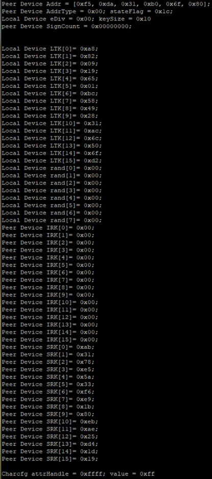

GAP Bond Manager and LE Secure Connections¶
The GAP Bond Manager (GAPBondMgr) is a configurable module that offloads most of the Pairing & Bonding security mechanisms associated with the Security Manager (SM) protocol from the application. The GAPBongMgr executes in the protocol stack task’s context. Table 7. lists the terminology.
Term |
Description |
|---|---|
Pairing |
The process of generating & exchanging keys. Not to be confused with forming or establishing a BLE connection between two devices |
Encryption |
Data is encrypted after pairing, or re-encryption (a subsequent connection where keys are looked up from nonvolatile memory). |
Association |
The pairing method used based on the I/O Capabilities of both devices. For LE devices, Just Works, Numeric Comparison, Passkey Entry and Out-Of-Band are supported. |
Authentication |
The pairing process using an association method that supports MITM (Man in the Middle) protection. |
Bonding |
Storing the keys generated during the pairing process in nonvolatile memory to use for the next encryption sequence. |
Authorization |
An additional application level verification in addition to authentication. |
OOB |
Out of Band. Pairing keys are not exchanged over the air, but rather over some other source such as serial port or NFC. This also provides MITM protection. |
MITM |
Man in the Middle protection. MITM provides authentication during the pairing process which helps prevent a malicious attacker from impersonating the peer device during the key exchange. |
Just Works |
Unauthenticated pairing association method where keys are exchanged without MITM protection. |
The general process that the GAPBondMgr uses is as follows:
1. The pairing process: exchange keys through the methods described in Selection of Pairing Method.
The encryption process: Encrypt the link using keys Step 1.
3. The bonding process: store keys in secure flash (Simple Non Volatile memory, SNV).
Reconnecting: Use the keys stored in SNV to encrypt the link.
Tip
Performing all of these steps is not necessary. For example, two devices may choose to pair but not bond.
Security Modes in a Bluetooth LE Connection¶
The Generic Access Protocol (GAP) layer defines two security modes, along with several security levels per mode.
Security Mode 1 enforces security by means of encryption, and contains four levels:
Level 1: No Security (No authentication and no encryption)
Level 2: Unauthenticated pairing with encryption
Level 3: Authenticated pairing with AES-CCM encryption
Level 4: Authenticated LE Secure Connections pairing with encryption using Elliptic Curve Diffie-Hellman P-256 (ECDH) and AES-CCM encryption.
Security Mode 2 enforces security by means of data signing, and contains two levels:
Level 1: Unauthenticated pairing with data signing
Level 2: Authenticated pairing with data signing
A connection is always established in Security Mode 1, level 1 and can later be upgraded to any other security level. The pairing method chosen determines the actual security mode and level achievable. As discussed in Selection of Pairing Method, the pairing method is selected based on the capabilities of the devices in the connection.
When configured to do so, the BLE5-Stack allows to achieve all the security modes and levels presented, including security mode 1 level 4.
Additional details regarding this topic can be found in [Vol 3], Part C, section §10 of the Bluetooth Core Specifications Version 5.3.
Selection of Pairing Method¶
Bluetooth Core Specification Version 4.2 added support for the LE Secure Connections feature to enable additional strength to the BLE pairing process. For a detailed description of the algorithms used for LE Secure Connections, see the Security Architecture section ([Vol 1], Part A, Section 5.1) of the Bluetooth Core Specifications Version 5.3. The previous pairing methods used in the Bluetooth Core Specification Versions 4.1 and 4.0 are still available, and are now defined as LE Legacy Pairing. The main difference is that Secure Connection uses Elliptic Curve Diffie-Hellman (ECDH) cryptography, while LE Legacy Pairing does not.
There are four types of pairing methods which are referred to as “Association Models” in the core specification. Each pairing method is described in detail in GAPBondMgr Examples for Different Pairing Methods.
Just Works (LE Secure Connections or LE Legacy)
Passkey Entry (LE Secure Connections or LE Legacy)
Numeric Comparison (LE Secure Connections)
Out Of Band (LE Secure Connections or LE Legacy)
Which pairing method is selected, and whether or not pairing will succeed depends on the following parameters from both peer devices during the pairing process:
Out Of Band (OOB) set / not set
Man In The Middle (MITM) set / not set
Input/Output (IO) Capabilities
LE Secure Connections supported / not supported
The GAPBondMgr parameters, as they map to the table parameters below are listed here. For more information on these parameters, see BLE Stack API Reference (GAPBondMgr section).
GAPBOND_OOB_ENABLED: Out of band (OOB) set / not set
GAPBOND_MITM_PROTECTION: Man in the middle (MITM) set / not set
GAPBOND_IO_CAPABILITIES: Input/Output (IO) Capabilities
GAPBOND_SECURE_CONNECTION: LE Secure connections supported / not supported
Beyond what the Bluetooth Core Specifications Version 5.3 defines, this parameter also affects whether or not pairing succeeds, as described in BLE Stack API Reference (GAPBondMgr section).
The tables below are from the Selecting Key Generation Method section ([Vol 3], Part H, Section 2.3.5.1) of the Bluetooth Core Specifications Version 5.3. Use these tables to determine which pairing mode is selected for any set of parameters.
If both devices support LE Secure Connections, use Table 8. to decide upon the next step.
Initiator OOB Set |
Initiator OOB Not Set |
Initiator MITM Set |
Initiator MITM Not Set |
|
|---|---|---|---|---|
Responder OOB Set |
Use OOB |
Use OOB |
||
Responder OOB Not Set |
Use OOB |
Check MITM |
||
Responder MITN Set |
Use IO Capabilities |
Use IO Capabilities |
||
Responder MITN Not Set |
Use IO Capabilities |
Use Just Works |
||
If at least one device does not support LE Secure Connections, use Table 9. to decide upon the next step.
Initiator OOB Set |
Initiator OOB Not Set |
Initiator MITM Set |
Initiator MITM Not Set |
|
|---|---|---|---|---|
Responder OOB Set |
Use OOB |
Check MITM |
||
Responder OOB Not Set |
Check MITM |
Check MITM |
||
Responder MITN Set |
Use IO Capabilities |
Use IO Capabilities |
||
Responder MITN Not Set |
Use IO Capabilities |
Use Just Works |
||
If, based on one of the previous tables, IO capabilities are to be used to determine the association model, use Table 10.
Responder |
Initiator |
||||
|---|---|---|---|---|---|
Display Only |
Display YesNo |
Keyboard Only |
NoInput NoOutput |
Keyboard Display |
|
Display Only |
Just Works Unauthenticated |
Just Works Unauthenticated |
Passkey Entry: Responder displays, Initiator inputs Authenticated |
Just Works Unauthenticated |
Passkey Entry: Responder displays, Initiator inputs Authenticated |
Display YesNo |
Just Works Unauthenticated |
Just Works (For LE Legacy Pairing) Unauthenticated |
Passkey Entry: Responder displays, Initiator inputs Authenticated |
Just Works Unauthenticated |
Passkey Entry (For LE Legacy Pairing) Responder displays Initiator inputs Authenticated |
Numeric Comparison (For LE Secure Connections) Authenticated |
Numeric Comparison (For LE Secure Connections) Authenticated |
||||
Keyboard Only |
Passkey Entry: Initiator displays, Responder inputs Authenticated |
Passkey Entry: Initiator displays, Responder inputs Authenticated |
Passkey Entry: Initiator displays, Responder inputs Authenticated |
Just Works Unauthenticated |
Passkey Entry: Initiator displays, Responder inputs Authenticated |
NoInput NoOutput |
Just Works Unauthenticated |
Just Works Unauthenticated |
Just Works Unauthenticated |
Just Works Unauthenticated |
Just Works Unauthenticated |
Keyboard Display |
Passkey Entry: Initiator displays, Responder inputs Authenticated |
Passkey Entry (For LE Legacy Pairing) Initiator displays Responder inputs Authenticated |
Passkey Entry: Responder displays, Initiator inputs Authenticated |
Just Works Unauthenticated |
Passkey Entry (For LE Legacy Pairing) Initiator displays Responder inputs Authenticated |
Numeric Comparison (For LE Secure Connections) Authenticated |
Numeric Comparison (For LE Secure Connections) Authenticated |
||||
Using GAPBondMgr¶
This section describes what the application must do to configure, start, and use
the GAPBondMgr. The GAPBondMgr is defined in gapbondmgr.c and gapbondmgr.h.
BLE Stack API Reference (GAPBondMgr section) describes the full API including
commands, configurable parameters, events, and callbacks.
The general steps to use the GAPBondMgr module are as follows:
1. Configure the stack to include GAPBondMgr functionality by defining the
following in build_config.opt in the stack project:
-DGAP_BOND_MGR
2. If using LE Secure Connections, the PDU size must be >= 69. This can be set by
defining the following preprocessor symbol in the application
project: MAX_PDU_SIZE=69. Also, the minimum heap size that can be used with
LE Secure Connections is 3690. (See Dynamic Memory Allocation for heap size
management.)
3. Configure the GAPBondMgr by initializing its parameters as desired. GAPBondMgr configuration parameters are not persistent and must be configured after the device is reset. See BLE Stack API Reference (GAPBondMgr section) for a complete list of parameters with functionality described. There are examples of this for the various pairing/bonding modes in GAPBondMgr Examples for Different Pairing Methods.
4. Register application callbacks with the GAPBondMgr, so that the application can communicate with the GAPBondMgr and be notified of events.
// Register with bond manager after starting device GAPBondMgr_Register(&bondmanager_callbacks);
Here bondmanager_callbacks is defined as a structure containing the
GAPBondMgr Callbacks. A passcode callback function is mandatory.
// Bond Manager Callbacks static gapBondCBs_t bondMgrCBs = { SimpleCentral_passcodeCb, // Passcode callback SimpleCentral_pairStateCb // Pairing/Bonding state Callback };
5. Once the GAPBondMgr is configured, it operates mostly autonomously from the perspective of the application. When a connection is established, the GAPBondMgr manages pairing and bonding depending on the configuration parameters set during initialization. It also communicates with the application as needed through the defined callbacks.
A few parameters can be set and functions can be called asynchronously at any time from the application. See BLE Stack API Reference (GAPBondMgr section) for more information.
Most communication between the GAPBondMgr and the application at this point occurs through the callbacks which were registered in Step 5. Figure 82. is a flow diagram example of the GAPBondMgr notifying the application that pairing has been completed. The same method occurs for various other events and will be expanded upon in the following section.
![@startuml
participant Application
participant Gapbondmgr as "GAPBondMgr"
participant BLEStack as "BLE Stack"
BLEStack -> Gapbondmgr : GAP_AUTHENTICATION_\nCOMPLETE_EVENT
Gapbondmgr -> Application : Pairing state callback
Application-> Application : SimpleCentral_pairStateCb
Application-> Application : SimpleCentral_enqueueMsg
Application-> Application : SimpleCentral_processAppMsg
rnote over "Application"
SC_EVT_PAIR_STATE
end note
Application-> Application : SimpleCentral_processPairState
rnote over "Application"
GAPBOND_PAIRING_STATE_COMPLETE
end note
@enduml](../_images/plantuml-bf14786892004a9387ee905d842630d020583326.png)
Figure 82. GapBondMgr Callback Example.¶
GAPBondMgr Examples for Different Pairing Methods¶
This section provides message diagrams for the types of security that can be implemented. These modes assume acceptable I/O capabilities are available for the security mode, and that the selection of whether or not to support LE Secure Connections allows for the pairing method. See the Selection of Pairing Method on how these parameters affect pairing. These examples only consider the pairing aspect. Bonding can be added to each type of pairing in the same manner and is shown in the next section.
Caution
The code snippets here are not complete functioning examples, and are only intended for illustration purposes.
Warning
It is not allowed to set MITM to TRUE while IO capability is set to GAPBOND_IO_CAP_NO_INPUT_NO_OUTPUT since these two conflict each other.
Disabling Pairing¶
With pairing mode set to GAPBOND_PAIRING_MODE_NO_PAIRING, the BLE stack
automatically rejects any attempt at pairing.
Configure the GAPBondMgr as follows to disable pairing:
// Pairing is not allowed
uint8_t pairMode = GAPBOND_PAIRING_MODE_NO_PAIRING;
GAPBondMgr_SetParameter(GAPBOND_PAIRING_MODE, sizeof(uint8_t), &pairMode);
Enabling Pairing¶
To start or allow the pairing process after a connection is formed, the GAPBondMgr can be
configured to automatically request pairing or wait for pairing request from the
peer device. The actual behavior depends on the device’s GAP role (Central or Peripheral)
and the setting of the GAPBondMgr pairing mode (GAPBOND_PAIRING_MODE).
To initiate the pairing process on Peripheral role devices, GAPBOND_PAIRING_MODE_INITIATE will
send a Slave Security Request shortly after the GAPBondMgr is informed that the connection is formed.
For Central role devices, GAPBOND_PAIRING_MODE_INITIATE will send a Pairing Request or request
the Link Layer to encrypt the link if the device has previously paired/bonded:
// Initiate pairing request
uint8_t pairMode = GAPBOND_PAIRING_MODE_INITIATE;
GAPBondMgr_SetParameter(GAPBOND_PAIRING_MODE, sizeof(uint8_t), &pairMode);
The Peripheral can be configured to wait for a Pairing Request from the Central when the pairing mode
is set to GAPBOND_PAIRING_MODE_WAIT_FOR_REQ. When this pairing mode is selected, the GAPBondMgr will
automatically respond with a Pairing Response based on other GAPBondMgr configured parameters.
// Wait for a pairing request
uint8_t pairMode = GAPBOND_PAIRING_MODE_WAIT_FOR_REQ;
GAPBondMgr_SetParameter(GAPBOND_PAIRING_MODE, sizeof(uint8_t), &pairMode);
Tip
When pairing with smartphone Central devices, it is recommended to use GAPBOND_PAIRING_MODE_WAIT_FOR_REQ
as undefined behavior may occur when a Slave Security Request is sent by the Peripheral. Both iOS
and Android will initiate pairing when the peripheral responds with an Insufficient Authentication error
response when a GATT secure characteristic is accessed.
Pairing can also be enabled by utilizing GAPBondMgr_Pair(). This API can be used to start the pairing process when pairing is not started automatically by the GAPBondMgr. For more information, please refer to Pairing and Encryption without GAPBondMgr
bStatus_t stat = GAPBondMgr_Pair(connHandle);
LE Secure Connections¶
LE Secure Connections is enabled by default in BLE5-Stack. If you don’t want to use
LE Secure Connections, set the GAPBOND_SECURE_CONNECTION variable
to GAPBOND_SECURE_CONNECTION_NONE during the GAPBondMgr initialization.
uint8_t gapbondSecure = GAPBOND_SECURE_CONNECTION_NONE;
GAPBondMgr_SetParameter(GAPBOND_SECURE_CONNECTION, sizeof(uint8_t), &gapbondSecure);
It is important when trying to decipher over-the-air sniffer logs with LE Secure Connections enabled, you need to use a specific “debug” key as defined by Vol 3 Part H section 2.3.5.6.1 of the Bluetooth Core Specifications Version 5.3. In the BLE5-Stack, this key is enabled using SysConfig, by checking ‘ECC Debug Keys’ under BLE, Bond Manager (see Bond Manager Configurations). When either the initiating or non-initiating device uses this specific debug key, it enables over-the-air sniffer equipment that supports LE Secure Connections to determine the LTK and therefore monitor/decrypt encrypted traffic throughout the connection.
LESC Limitations & Recommendations¶
LE Secure Connections uses an ECDH public-private key pair as part of the pairing process. See Selection of Pairing Method and the LE Secure Connections Pairing Phase 2 section of the Bluetooth Core Specifications Version 5.3 for more information about how these keys and how they are used in the pairing process.
To summarize, as part of LESC pairing Phase 1 each device will generate its own ECDH public-private key pair. As part of LESC pairing Phase 2 each device will compute the Diffie-Hellman (DH) Key based on the public keys that are exchanged.
ECC public-private and DH key generation is implemented by the ECDH TI-RTOS7 driver for the Private Key Accelerator (PKA) on the CC13xx or CC26xx. These routines are blocking by nature and take around 136.5ms to execute. During LESC pairing, the ECDH driver will be accessed twice by the link layer (LL) once to generate the public/private key pair and again to generate the DH key. This means the stack OSAL tasks will be blocked for around 136.5ms twice during pairing. However, the user application task will be able to run at this time.
Because of this, TI recommends the following when using LESC:
Supervision timeout >= 140ms
To alleviate the amount of blocking required, the user application can generate the public-private key pair ahead of the pairing process, or it can define when the keys should be recycled by using the following parameters of the GapBondMgr. These options are mutually exclusive, as generation of keys by the application bypasses the recycle parameter. To truly minimize the affect of ECC on the BLE connection, perform ECC before any connections are established.
Authentication Pairing Only¶
For users that want the pairing method results in a key generation that provides Authenticated MITM protection only, they can achieve that by doing the following.
uint8_t ioCap = GAPBOND_IO_CAP_KEYBOARD_DISPLAY;
uint8_t mitm = TRUE;
uint8_t authenPairingOnly = TRUE;
// Only certain combinations of IO capability will result
// authenticad pairing mode. Here we use GAPBOND_IO_CAP_KEYBOARD_DISPLAY
// as code example to make sure whichever IO capability other than NoInput
// NoOutput the peer device has will result in an authenticated link
GAPBondMgr_SetParameter(GAPBOND_IO_CAPABILITIES, sizeof(uint8_t), &ioCap);
// For authenticated pairing, MITM has to be set to TRUE
GAPBondMgr_SetParameter( GAPBOND_MITM_PROTECTION, sizeof (uint8_t), &mitm);
// Enable authentication only pairing
GAPBondMgr_SetParameter( GAPBOND_AUTHEN_PAIRING_ONLY, sizeof (uint8_t), &authenPairingOnly);
Upon setting GAPBOND_AUTHEN_PAIRING_ONLY to true, if the peer device’s IO capability can not result in authenticated link, the BLE5-Stack will reject the pairing and return error code SMP_PAIRING_FAILED_AUTH_REQ.
![@startuml
participant Application
participant Gapbondmgr as "GAPBondMgr"
participant BLEStack as "BLE Stack"
BLEStack -> Gapbondmgr : GAP_LINK_ESTABLISHED_EVENT
Gapbondmgr -> BLEStack : GAPBondMgr_LinkEst()
Gapbondmgr -> BLEStack : GAP_Authenticate()
BLEStack -->] : Pairing req
Gapbondmgr -> Application : Pairing state callback
rnote over Application
GAPBOND_PAIRING_
STATE_STARTED
end note
BLEStack <--] : Pairing rsp
rnote over BLEStack
Base on the IO capability, MITM, OOB setting of both devices,
STACK needs to sort out whether this results to Just Work pairing.
end note
group if the pairing method (Just Work) can not fulfill Authentication MITM protection
BLEStack -->] : End pairing
BLEStack -> Gapbondmgr : GAP_AUTHENTICATION_\nCOMPLETE_EVENT
Gapbondmgr -> Application : Pairing state callback
rnote over Application
GAPBOND_PAIRING_STATE_COMPLETE
SMP_PAIRING_FAILED_AUTH_REQ
end note
end
@enduml](../_images/plantuml-c289894d662d49150c8c9a429a4ad86596bd1971.png)
Figure 83. Authentication Only Pairing.¶
For more information regarding which pairing mode results authenticated link, please refer Table 10.
Just Works Pairing¶
Just Works pairing allows encryption without man in the middle (MITM) authentication and is vulnerable to MITM attacks. Just Works pairing can be LE Legacy or LE Secure Connections pairing. The GAPBondMgr does not need any additional input from the application for Just Works pairing. Configure the GAPBondMgr for Just Works pairing as follows.
uint8_t mitm = FALSE;
GAPBondMgr_SetParameter( GAPBOND_MITM_PROTECTION, sizeof (uint8_t), &mitm);
Figure 84. describes the interaction between the GAPBondMgr and
the application for Just Works pairing. As shown, the application receives
a GAPBOND_PAIRING_STATE_STARTED event once the pairing request has been sent,
and a GAPBOND_PAIRING_STATE_COMPLETE event once the pairing process has been
completed. At this time, the link is encrypted.
![@startuml
participant Application
participant Gapbondmgr as "GAPBondMgr"
participant BLEStack as "BLE Stack"
BLEStack -> Gapbondmgr : GAP_LINK_ESTABLISHED_EVENT
Gapbondmgr -> BLEStack : GAPBondMgr_LinkEst()
Gapbondmgr -> BLEStack : GAP_Authenticate()
BLEStack -->] : Pairing req
Gapbondmgr -> Application : Pairing state callback
rnote over Application
GAPBOND_PAIRING_
STATE_STARTED
end note
BLEStack -->] : Encryption req
BLEStack <--] : Encryption rsp
BLEStack -> Gapbondmgr : GAP_AUTHENTICATION_\nCOMPLETE_EVENT
Gapbondmgr -> Application : Pairing state callback
rnote over Application
GAPBOND_PAIRING_
STATE_COMPLETE
end note
@enduml](../_images/plantuml-71a8d6166875665e5d903d5f11c4f34d3efe9f28.png)
Figure 84. Just Works Pairing.¶
Passcode Entry¶
Passkey entry is a type of authenticated pairing that can prevent man in the middle (MITM) attacks. It can be used with either LE Legacy pairing or Secure Connections pairing. In this pairing method, one device displays a 6-digit passcode, and the other device enters the passcode. As described in Selection of Pairing Method, the IO capabilities decide which device performs which role. The passcode callback registered with the GAPBondMgr when it was started is used to enter or display the passcode. The following is an example of initiating Passcode Entry pairing where the passcode is displayed.
Define passcode callback
// Bond Manager Callbacks
static gapBondCBs_t bondMgrCBs =
{
SimpleCentral_passcodeCb, // Passcode callback
SimpleCentral_pairStateCb // Pairing/Bonding state Callback
};
/*********************************************************************
* @fn SimpleCentral_passcodeCb
*
* @brief Passcode callback.
*
* @return none
*/
static void SimpleCentral_passcodeCb(uint8_t *deviceAddr, uint16_t connHandle,
uint8_t uiInputs, uint8_t uiOutputs,
uint32_t numComparison)
{
uint8_t *pData;
// Allocate space for the passcode event.
if ((pData = ICall_malloc(sizeof(uint8_t))))
{
*pData = uiOutputs;
// Enqueue the event.
SimpleCentral_enqueueMsg(SC_EVT_PASSCODE_NEEDED, 0, pData);
}
}
Configure GAPBondMgr
uint8_t pairMode = GAPBOND_PAIRING_MODE_INITIATE;
uint8_t mitm = TRUE;
GAPBondMgr_SetParameter(GAPBOND_PAIRING_MODE, sizeof(uint8_t), &pairMode);
GAPBondMgr_SetParameter(GAPBOND_MITM_PROTECTION, sizeof(uint8_t), &mitm);
Process passcode callback and send the response to the stack.
//! BLE Default Passcode
#define B_APP_DEFAULT_PASSCODE 123456
/*********************************************************************
* @fn SimpleCentral_processPasscode
*
* @brief Process the Passcode request.
*
* @return none
*/
static void SimpleCentral_processPasscode(uint16_t connHandle,
uint8_t uiOutputs)
{
// Display passcode to user
if (uiOutputs != 0)
{
Display_printf(dispHandle, SC_ROW_CUR_CONN, 0, "Passcode: %d",
B_APP_DEFAULT_PASSCODE);
}
// Send passcode response
GAPBondMgr_PasscodeRsp(connHandle , SUCCESS, B_APP_DEFAULT_PASSCODE);
}
Depending on the uiInputs and uiOutputs returned from the GAPBondMgr,
the passcode must either be displayed or entered. The passcode is
then sent to the GAPBondMgr using GAPBondMgr_PasscodeRsp(), so that
pairing can continue. In this case, the password is statically set to 123456.
In a real product, the password will likely be randomly generated, and the
device must expose a way for the user to enter the passcode, then send it to the
GAPBondMgr using GAPBondMgr_PasscodeRsp(). An example interaction
between the GAPBondMgr and the application is shown in
Figure 85..
![@startuml
participant Application
participant Gapbondmgr as "GAPBondMgr"
participant BLEStack as "BLE Stack"
BLEStack -> Gapbondmgr : GAP_LINK_ESTABLISHED_EVENT
Gapbondmgr -> BLEStack : GAPBondMgr_LinkEst()
Gapbondmgr -> BLEStack : GAP_Authenticate()
BLEStack -->] : Pairing req
Gapbondmgr -> Application : Pairing state callback
rnote over Application
GAPBOND_PAIRING_
STATE_STARTED
end note
BLEStack -> Gapbondmgr : GAP_PASSKEY_NEEDED_\nEVENT
Gapbondmgr -> Application : Passcode callback
[--> Application : Enter or display\npasscode
Application -> Gapbondmgr : GAPBondMgr_PasscodeRsp()
Gapbondmgr -> BLEStack : GAP_PasscodeUpdate()
BLEStack -->] : Encryption req
BLEStack <--] : Encryption rsp
BLEStack -> Gapbondmgr : GAP_AUTHENTICATION_\nCOMPLETE_EVENT
Gapbondmgr -> Application : Pairing state callback
rnote over Application
GAPBOND_PAIRING_
STATE_COMPLETE
end note
@enduml](../_images/plantuml-6ecc2ed56bf9645de6385945bd5a49aaaca98ed6.png)
Figure 85. Interaction Between the GAPBondMgr and the Application when exchanging a passcode.¶
Numeric Comparison¶
Numeric comparison is a type of authenticated pairing that protects from MITM attacks. It is only possible as a LE Secure Connections pairing; not LE legacy. For numeric comparison pairing, both devices display a 6-digit code. Each device must then indicate, through a button press or some other Yes-No input, whether the codes match. The passcode callback registered with the GAPBondMgr when it was started is used to display the 6-digit code. The following is an example of initiating Numeric Comparison pairing where the passcode is displayed. The IO capabilities must be set appropriately to select numeric comparison (that is, Display/Yes-No on both sides).
Define passcode callback to display code.
1// Bond Manager Callbacks
2static gapBondCBs_t bondMgrCBs =
3{
4 SimpleCentral_passcodeCb, // Passcode callback
5 SimpleCentral_pairStateCb // Pairing/Bonding state Callback
6};
7
8static void SimpleCentral_passcodeCb(uint8_t *deviceAddr, uint16_t connHandle, uint8_t uiInputs, uint8_t uiOutputs, uint32_t numComparison)
9{
10 gapPasskeyNeededEvent_t *pData;
11
12 // Allocate space for the passcode event.
13 if ((pData = ICall_malloc(sizeof(gapPasskeyNeededEvent_t))))
14 {
15 memcpy(pData->deviceAddr, deviceAddr, B_ADDR_LEN);
16 pData->connectionHandle = connHandle;
17 pData->numComparison = numComparison;
18
19 // Enqueue the event.
20 SimpleCentral_enqueueMsg(SC_EVT_PASSCODE_NEEDED, 0, pData);
Configure GAPBondMgr
1uint8_t pairMode = GAPBOND_PAIRING_MODE_WAIT_FOR_REQ;
2uint8_t scMode = GAPBOND_SECURE_CONNECTION_ONLY;
3uint8_t mitm = TRUE;
4uint8_t ioCap = GAPBOND_IO_CAP_DISPLAY_YES_NO;
5
6GAPBondMgr_SetParameter(GAPBOND_IO_CAPABILITIES, sizeof(uint8_t), &ioCap);
7GAPBondMgr_SetParameter(GAPBOND_PAIRING_MODE, sizeof(uint8_t), &pairMode);
8GAPBondMgr_SetParameter(GAPBOND_MITM_PROTECTION, sizeof(uint8_t), &mitm);
9GAPBondMgr_SetParameter(GAPBOND_SECURE_CONNECTION, sizeof(uint8_t), &scMode);
Process passcode callback and display code.
1 static void SimpleCentral_processPasscode(uint16_t connHandle,
2 uint8_t uiOutputs)
3 {
4 // Display passcode to user
5 if (uiOutputs != 0)
6 {
7 Display_printf(dispHandle, SC_ROW_CUR_CONN, 0, "Passcode: %d",
8 B_APP_DEFAULT_PASSCODE);
9 }
10
11 // Send passcode response
12 GAPBondMgr_PasscodeRsp(connHandle, SUCCESS, B_APP_DEFAULT_PASSCODE);
13 }
Accept Yes-No input from user and send response to GAPBondMgr.
1if (keys & KEY_RIGHT)
2{
3 //Send response to indicate that code matches
4 GAPBondMgr_PasscodeRsp(connHandle, SUCCESS, TRUE);
5 return;
6}
In this case, the third parameter of GAPBondMgr_PasscodeRsp, which usually accepts a passcode, is overloaded to send TRUE to the stack to indicate that the codes match and to continue with pairing. The process of numeric comparison is illustrated in Figure 86.
![@startuml
participant Application
participant Gapbondmgr as "GAPBondMgr"
participant BLEStack as "BLE Stack"
BLEStack -> Gapbondmgr : GAP_LINK_ESTABLISHED_EVENT
Gapbondmgr -> BLEStack : GAPBondMgr_LinkEst()
Gapbondmgr -> BLEStack : GAP_Authenticate()
BLEStack -->] : Pairing req
Gapbondmgr -> Application : Pairing state callback
rnote over Application
GAPBOND_PAIRING_
STATE_STARTED
end note
BLEStack -> Gapbondmgr : GAP_PASSKEY_\nNEEDED_EVENT
Gapbondmgr -> Application : Passcode callback
[<-- Application : Display code
[--> Application : Codes match
Application -> Gapbondmgr : GAPBondMgr_PasscodeRsp()
Gapbondmgr -> BLEStack : GAP_PasscodeUpdate()
BLEStack -->] : Encryption req
BLEStack <--] : Encryption rsp
BLEStack -> Gapbondmgr : GAP_AUTHENTICATION_\nCOMPLETE_EVENT
Gapbondmgr -> Application : Pairing state callback
rnote over Application
GAPBOND_PAIRING_
STATE_COMPLETE
end note
@enduml](../_images/plantuml-5934f3ee2028ae934884e3f876da2a0be791be5a.png)
Figure 86. Numeric Comparison.¶
Out of Band Pairing¶
Out of Band is a feature that allows two devices to send authentication information over a communication channel that is out of the band of the device, e.g. by NFC. The purpose is to allow two devices with no input or output capabilities to create an authenticated pairing. This happens by sending three authentication parameters: device address, random number and confirm value.
The main purpose of OOB authentication is to protect against MITM attacks. The idea is to generate a key on one device. (This can be the initiator or the responder.) Then the OOB data is communicated to the other device by some other means of communication than BLE.
The OOB data is generated at runtime. This can be done using elliptic-curve cryptography (ECC) or not. In this example we will use ECC to generate a key. To generate OOB data with a central application such as Simple Central follow these steps:
Create gapBondOOBData_t variables, one for the local OOB data and one for the remote device’s data:
// This is needed for the device that generates OOB data gapBondOOBData_t localOobData; // This is needed to store the OOB data this device receives gapBondOOBData_t remoteOobData;
Define the pair state callback
1// Bond Manager Callbacks 2static gapBondCBs_t bondMgrCBs = 3{ 4SimpleCentral_passcodeCb, // Passcode callback 5SimpleCentral_pairStateCb // Pairing/Bonding state Callback 6}; 7 8/********************************************************************* 9 * @fn SimpleCentral_pairStateCb 10 * 11 * @brief Pairing state callback. 12 * 13 * @return none 14 */ 15static void SimpleCentral_pairStateCb(uint16_t connHandle, uint8_t state, uint8_t status) 16{ 17 scPairStateData_t *pData; 18 // Allocate space for the event data. 19 if ((pData = ICall_malloc(sizeof(scPairStateData_t)))) 20 { 21 pData->connHandle = connHandle; 22 pData->status = status; 23 // Queue the event. 24 if(SimpleCentral_enqueueMsg(SC_EVT_PAIR_STATE, state, (uint8_t*) pData) != SUCCESS) 25 { 26 ICall_free(pData); 27 } 28 } 29}
To generate OOB data with ECC keys, you need to call GAPBondMgr_GenerateEccKeys() prior to GAPBondMgr_SCGetLocalOOBParameters(). After calling GAPBondMgr_GenerateEccKeys(), once the ECC keys are ready, the BLE5-Stack will send
GAPBOND_GENERATE_ECC_DONEevent to application and the event should be processed under pair state callback.Then application can call GAPBondMgr_SCGetLocalOOBParameters() to obtain OOB data which is generated using the ECC Keys. The OOB data can then be extracted. The example code below illustrate how to extract the OOB data.
Note
The GAPBondMgr_GenerateEccKeys() and GAPBondMgr_SCGetLocalOOBParameters() can be called either before and after the connection is established. But these need to be called before the pairing started. In this case, we call both functions before the connection is established.
1// Generate ECC Keys 2GAPBondMgr_GenerateEccKeys();
Listing 120. SimpleCentral_processPairState::GAPBOND_GENERATE_ECC_DONE Generate OOB data after ECC keys are ready.¶1 /********************************************************************* 2 * @fn SimpleCentral_processPairState 3 * 4 * @brief Process the new paring state. 5 * 6 * @return none 7 */ 8 static void SimpleCentral_processPairState(uint8_t state, 9 scPairStateData_t* pPairData) 10 { 11 uint8_t status = pPairData->status; 12 uint8_t pairMode = 0; 13 if (state == GAPBOND_GENERATE_ECC_DONE) 14 { 15 if (status == SUCCESS) 16 { 17 GAPBondMgr_SCGetLocalOOBParameters(&localOobData); 18 uint8_t i; 19 for (i = 0; i < KEYLEN; i++) 20 { 21 Display_printf(dispHandle, SC_ROW_CUR_CONN+i+5, 0, "OOB data confirm[%d]: %d", i, localOobData.confirm[i]); 22 Display_printf(dispHandle, SC_ROW_CUR_CONN+KEYLEN+i+5, 0, "OOB data rand[%d]: %d", i, localOobData.rand[i]); 23 } 24 } 25 break; 26 } 27 }
Note
If GAPBondMgr_GenerateEccKeys() is not called before GAPBondMgr_SCGetLocalOOBParameters(), the OOB data will be generated without ECC.
After the OOB data is generated, the device needs to send it over to the peer device using any other medium for example NFC or wired solutions(E.g. UART, SPI, LIN, CAN…etc). The device which has received the OOB data (not the one that generated it) should set the GAPBOND_OOB_ENABLED parameter to true. If both devices have generated and shared their OOB data both should set the flag. In this case we will only set the flag on the peripheral device.
uint8_t oobEnabled = TRUE; GAPBondMgr_SetParameter(GAPBOND_OOB_ENABLED, sizeof(uint8_t), &oobEnabled);
Perform OOB communication, i.e. communicate the data in localOobData to the responder device. For simplicity, in this example the central device will display the data thus it can be hard coded on the peripheral device.
Figure 87. The central device displays the OOB data.¶
Listing 121. SimplePeripheral_processGapMessage::GAP_DEVICE_INIT_DONE_EVENT The OOB data is hard coded on the peripheral device.¶1uint8_t oobEnabled = TRUE; 2GAPBondMgr_SetParameter(GAPBOND_OOB_ENABLED, sizeof(uint8_t), &oobEnabled); 3remoteOobData.confirm[0] = 204; 4remoteOobData.confirm[1] = 29; 5remoteOobData.confirm[2] = 240; 6remoteOobData.confirm[3] = 154; 7remoteOobData.confirm[4] = 141; 8remoteOobData.confirm[5] = 40; 9remoteOobData.confirm[6] = 132; 10remoteOobData.confirm[7] = 41; 11remoteOobData.confirm[8] = 156; 12remoteOobData.confirm[9] = 106; 13remoteOobData.confirm[10] = 91; 14remoteOobData.confirm[11] = 230; 15remoteOobData.confirm[12] = 11; 16remoteOobData.confirm[13] = 88; 17remoteOobData.confirm[14] = 117; 18remoteOobData.confirm[15] = 104; 19remoteOobData.rand[0] = 56; 20remoteOobData.rand[1] = 242; 21remoteOobData.rand[2] = 38; 22remoteOobData.rand[3] = 152; 23remoteOobData.rand[4] = 189; 24remoteOobData.rand[5] = 78; 25remoteOobData.rand[6] = 164; 26remoteOobData.rand[7] = 36; 27remoteOobData.rand[8] = 153; 28remoteOobData.rand[9] = 82; 29remoteOobData.rand[10] = 167; 30remoteOobData.rand[11] = 190; 31remoteOobData.rand[12] = 140; 32remoteOobData.rand[13] = 235; 33remoteOobData.rand[14] = 207; 34remoteOobData.rand[15] = 93; 35GAPBondMgr_SCSetRemoteOOBParameters(&remoteOobData, 1);
The process of aforementioned OOB pairing example is illustrated in Figure 88.
![@startuml
participant cen_app as "Central\nApplication"
participant cen_gapbondmgr as "Central\nGapbondmgr"
participant cen_blestack as "Central\nBLE-Stack"
participant per_blestack as "Peripheral\nBLE-Stack"
participant per_gapbondmgr as "Peripheral\nGapbondmgr"
participant per_app as "Peripheral\nApplication"
cen_app -> cen_gapbondmgr : Generate ECC keys
cen_gapbondmgr -> cen_blestack : Generate ECC keys
==ECC Keys are ready ==
cen_gapbondmgr -> cen_app : Pairing state callback
rnote over cen_app
GAPBOND_GENERATE_
ECC_DONE
end note
cen_app -> cen_gapbondmgr : Get local OOB parameters
cen_gapbondmgr -> cen_blestack : Compute confirm and rand values
cen_app -> per_app : Sending OOB data through either NFC or other wired protocol
== Once peripheral receives OOB data ==
per_app -> per_app : Set GAPBOND_OOB_ENABLED to true
== After connection has established ==
cen_gapbondmgr -> cen_blestack : GAPBondMgr_LinkEst()
cen_gapbondmgr -> cen_blestack : GAP_Authenticate()
cen_blestack --> per_blestack : Pairing req
per_blestack --> cen_blestack : Pairing rsp
cen_gapbondmgr -> cen_app : Pairing state callback
rnote over cen_app
GAPBOND_PAIRING_
STATE_STARTED
end note
per_gapbondmgr -> per_app : Pairing state callback
rnote over per_app
GAPBOND_PAIRING_
STATE_STARTED
end note
cen_blestack --> per_blestack : Encryption req
cen_blestack <-- per_blestack : Encryption rsp
cen_blestack -> cen_gapbondmgr : GAP_AUTHENTICATION_\nCOMPLETE_EVENT
cen_gapbondmgr -> cen_app : Pairing state callback
per_blestack -> per_gapbondmgr : GAP_AUTHENTICATION_\nCOMPLETE_EVENT
per_gapbondmgr -> per_app : Pairing state callback
rnote over cen_app
GAPBOND_PAIRING_
STATE_COMPLETE
end note
rnote over per_app
GAPBOND_PAIRING_
STATE_COMPLETE
end note
@enduml](../_images/plantuml-b655224283ece1b9203a221dedeb6e6ef811cd11.png)
Figure 88. Out of Band Pairing¶
GAPBondMgr Examples for Manipulating Bonding¶
GAPBondMgr offers various functions to help users to:
Enable bonding
Extract bonding information
Import bonding information to NV
Enable Bonding¶
Bonding can enabled or disabled for any type of pairing through the
GAPBOND_BONDING_ENABLED parameter, and occurs after the pairing
process is complete. To enable bonding, configure the GAPBondMgr as
follows:
uint8_t bonding = TRUE;
GAPBondMgr_SetParameter(GAPBOND_BONDING_ENABLED, sizeof(uint8_t), &bonding);
With bonding enabled, the GAPBondMgr stores the long-term key
transferred during the pairing process to SNV. See GAPBondMgr and SNV for more information.
After this is completed, the application is notified
through the GAPBOND_PAIRING_STATE_COMPLETE event.
GAPBOND_PAIRING_STATE_BOND_SAVED is only passed to the application pair
state callback when initially connecting, pairing, and bonding. For
future connections to a bonded device, the security keys are loaded from
flash, thus skipping the pairing process. In this case, only
GAPBOND_PAIRING_STATE_BONDED is passed to the application pair state callback.
This is illustrated in Figure 89.
![@startuml
participant Application
participant Gapbondmgr as "GAPBondMgr"
participant BLEStack as "BLE Stack"
BLEStack -> Gapbondmgr : GAP_LINK_ESTABLISHED_EVENT
Gapbondmgr -> BLEStack : GAPBondMgr_LinkEst()
Gapbondmgr -> BLEStack : GAP_Authenticate
BLEStack -->] : Pairing req
Gapbondmgr -> Application : Pairing state callback
rnote over Application
GAPBOND_PAIRING_
STATE_STARTED
end note
== This section will vary depending on the pairing type.\nSee above examples for more information. ==
BLEStack -->] : Encryption req
BLEStack <--] : Encryption rsp
BLEStack -> Gapbondmgr : GAP_AUTHENTICATION_\nCOMPLETE_EVENT
rnote over Gapbondmgr
Save bond info in SNV
end note
Gapbondmgr -> Application : Pairing state callback
rnote over Application
GAPBOND_PAIRING_
STATE_COMPLETE
end note
rnote over Application
GAPBOND_PAIRING_
STATE_BOND_SAVED
end note
== Eventually the connection may be terminated and re-established. ==
BLEStack -> Gapbondmgr : GAP_LINK_ESTABLISHED_EVENT
Gapbondmgr -> BLEStack : GAPBondMgr_LinkEst()
rnote over Gapbondmgr
Read bond info from SNV.
end note
Gapbondmgr -> BLEStack : GAP_Bond()
BLEStack -->] : Encryption req
BLEStack <--] : Encryption rsp
BLEStack -> Gapbondmgr : GAP_BOND_COMPLETE_\nEVENT
Gapbondmgr -> Application : Pairing state callback
rnote over Application
GAPBOND_PAIRING_
STATE_BONDED
end note
@enduml](../_images/plantuml-630f962ae215212e09434ceec9cb2bdc64eabc11.png)
Figure 89. GAPBondMgr Example With Bonding Enabled.¶
Extract Bonding Information¶
After bonding, the local device can extract the bonding information saved in NV using gapBondMgrReadBondRec(). To successfully extract the bonding information, application will need to input the peer device’s address type and the peer device’s address. Those information are provided from the BLE5-Stack to the application when the link is established.
Following are the code snippet to extract the aforementioned parameters.
1// LOCAL VARIABLES
2
3// Array to save peer device's address
4static uint8_t peerDeviceAddr[B_ADDR_LEN];
5
6// enum to store peer device's address type
7static GAP_Peer_Addr_Types_t pPeerAddrType;
8
9static void SimplePeripheral_processGapMessage(gapEventHdr_t *pMsg)
10{
11 switch(pMsg->opcode)
12 {
13 case GAP_LINK_ESTABLISHED_EVENT:
14 {
15 gapEstLinkReqEvent_t *pPkt = (gapEstLinkReqEvent_t *)pMsg;
16
17 if (pPkt->hdr.status == SUCCESS)
18 {
19
20 // Copy Peer's addr
21 memcpy(peerDeviceAddr, pPkt->devAddr, B_ADDR_LEN);
22
23 // Copy Peer's addrType
24 pPeerAddrType = (GAP_Peer_Addr_Types_t)(pPkt->devAddrType & MASK_ADDRTYPE_ID);
25 }
26
27 //...
28 //...
Once extracting the needed parameters, we can call gapBondMgrReadBondRec() by using the following code snippet.
1// Parameters needed for storing bonding information.
2static gapBondRec_t pSavedBondRec;
3static gapBondLTK_t pLocalLtk;
4static gapBondLTK_t pPeerLtk;
5static uint8_t pPeerIRK[KEYLEN];
6static uint8_t pPeerSRK[KEYLEN];
7static uint32_t pPeerSignCount;
8static gapBondCharCfg_t charCfg;
9
10
11uint8_t readStatus = FAILURE;
12readStatus = gapBondMgrReadBondRec(pPeerAddrType,
13 peerDeviceAddr,
14 &pSavedBondRec,
15 &pLocalLtk,
16 &pPeerLtk,
17 pPeerIRK,
18 pPeerSRK,
19 pPeerSignCount,
20 &charCfg);
21if (readStatus == SUCCESS)
22{
23 // If read success, then export the data
24 // Here we will print it out for later use.
25 // For the print, we added the following defines
26 // Please consider your own example and modify as needed
27 // #define SP_ROW_DEBUG_BondLog (TBM_ROW_APP + 9)
28 // #define SP_ROW_DEBUG_PeerAddr (TBM_ROW_APP + 10)
29 // #define SP_ROW_DEBUG_LocalLTK (TBM_ROW_APP + 16)
30 // #define SP_ROW_DEBUG_PeerIRK (TBM_ROW_APP + 40)
31 // #define SP_ROW_DEBUG_PeerSRK (TBM_ROW_APP + 56)
32
33 Display_printf(dispHandle, SP_ROW_DEBUG_PeerAddr, 0,
34 "Peer Device Addr = [0x%02x, 0x%02x, 0x%02x, 0x%02x, 0x%02x, 0x%02x];",
35 pSavedBondRec.addr[0],
36 pSavedBondRec.addr[1],
37 pSavedBondRec.addr[2],
38 pSavedBondRec.addr[3],
39 pSavedBondRec.addr[4],
40 pSavedBondRec.addr[5]);
41
42 Display_printf(dispHandle, SP_ROW_DEBUG_PeerAddr+1, 0, "Peer Device AddrType = 0x%02x; stateFlag = 0x%02x;", pSavedBondRec.addrType, pSavedBondRec.stateFlags);
43 Display_printf(dispHandle, SP_ROW_DEBUG_PeerAddr+2, 0, "Local Device eDiv = 0x%02x; keySize = 0x%02x", pLocalLtk.div, pLocalLtk.keySize);
44 Display_printf(dispHandle, SP_ROW_DEBUG_PeerAddr+3, 0, "peer Device SignCount = 0x%08x;", pPeerSignCount);
45 for (i = 0; i < KEYLEN; i++)
46 {
47 Display_printf(dispHandle, SP_ROW_DEBUG_LocalLTK+i, 0, "Local Device LTK[%d]= 0x%02x;", i, pLocalLtk.LTK[i]);
48 Display_printf(dispHandle, SP_ROW_DEBUG_PeerIRK+i, 0, "Peer Device IRK[%d]= 0x%02x;", i, pPeerIRK[i]);
49 Display_printf(dispHandle, SP_ROW_DEBUG_PeerSRK+i, 0, "Peer Device SRK[%d]= 0x%02x;", i, pPeerSRK[i]);
50 }
51 for (i = 0; i < B_RANDOM_NUM_SIZE; i++)
52 {
53 Display_printf(dispHandle, SP_ROW_DEBUG_LocalLTK+16+i, 0, "Local Device rand[%d]= 0x%02x;", i, pLocalLtk.rand[i]);
54 }
55
56 Display_printf(dispHandle, SP_ROW_DEBUG_PeerSRK+16+1, 0, "Charcfg attrHandle = 0x%04x; value = 0x%02x", charCfg.attrHandle, charCfg.value);
57}
Warning
The pPeerLtk struct is not needed when extracting and importing bonds
to another device. Therefore, we are not printing it out as the content
of pPeerLtk is 0.
Here is the printout content using the code snippet.

Import Bonding Information¶
The bond import feature is useful when for example, there are multiple Bluetooth LE devices as peripheral and one mobile phone as central, and you would like the phone to go through the pairing process only once but is able to establish an encrypted link with any other peripheral nodes.
The following content illustrates such usecase.
Note
Here we assume device A and device B have the same secondary address. The device address can be configured by either using HCI_EXT_SetBDADDRCmd() or through SysConfig tool –> Device Configuration –> Configure BLE Address.
After extracting bonding information from device A and transfer the information to device B, we can then add those information into NV for device B by using gapBondMgrImportBond().
1// Make sure the device B has the same BD address as device A
2// For example, if the device A's address is the following
3// Then use HCI_EXT_SetBDADDRCmd to change the device B's address
4uint8_t bondImportTestAddr[B_ADDR_LEN] = {0x12, 0x34, 0x45, 0xFE, 0xCA, 0x98};
5// Change device's address
6HCI_EXT_SetBDADDRCmd(bondImportTestAddr);
7
8// Import Bond here
9// Hardcode the bonding information from the printout
10pSavedBondRec.addr[0] = 0xf5;
11pSavedBondRec.addr[1] = 0xda;
12pSavedBondRec.addr[2] = 0x31;
13pSavedBondRec.addr[3] = 0xb0;
14pSavedBondRec.addr[4] = 0x6f;
15pSavedBondRec.addr[5] = 0x80;
16
17pSavedBondRec.addrType = PEER_ADDRTYPE_PUBLIC_OR_PUBLIC_ID;
18pSavedBondRec.stateFlags = 0x1c;
19
20pLocalLtk.LTK[0]= 0xa8;
21pLocalLtk.LTK[1]= 0x82;
22pLocalLtk.LTK[2]= 0x09;
23pLocalLtk.LTK[3]= 0x19;
24pLocalLtk.LTK[4]= 0x65;
25pLocalLtk.LTK[5]= 0x01;
26pLocalLtk.LTK[6]= 0xbc;
27pLocalLtk.LTK[7]= 0x58;
28pLocalLtk.LTK[8]= 0x49;
29pLocalLtk.LTK[9]= 0x28;
30pLocalLtk.LTK[10]= 0x31;
31pLocalLtk.LTK[11]= 0xac;
32pLocalLtk.LTK[12]= 0x6c;
33pLocalLtk.LTK[13]= 0x50;
34pLocalLtk.LTK[14]= 0x6f;
35pLocalLtk.LTK[15]= 0xd2;
36
37pLocalLtk.div = 0;
38pLocalLtk.keySize = 0x10;
39
40pPeerLtk.div = 0;
41pPeerLtk.keySize = 0;
42uint8_t i;
43for (i = 0; i < B_RANDOM_NUM_SIZE; i++)
44{
45 pLocalLtk.rand[i] = 0;
46 pPeerLtk.rand[i] = 0;
47}
48
49for (i = 0; i < KEYLEN; i++)
50{
51 pPeerIRK[i] = 0;
52 pPeerLtk.LTK[i] = 0;
53}
54
55pPeerSRK[0]= 0xab;
56pPeerSRK[1]= 0x31;
57pPeerSRK[2]= 0x78;
58pPeerSRK[3]= 0xe5;
59pPeerSRK[4]= 0x5a;
60pPeerSRK[5]= 0x33;
61pPeerSRK[6]= 0xf6;
62pPeerSRK[7]= 0xe9;
63pPeerSRK[8]= 0x1b;
64pPeerSRK[9]= 0x80;
65pPeerSRK[10]= 0xeb;
66pPeerSRK[11]= 0xae;
67pPeerSRK[12]= 0x25;
68pPeerSRK[13]= 0xd4;
69pPeerSRK[14]= 0x1d;
70pPeerSRK[15]= 0x19;
71
72pPeerSignCount = 0;
73charCfg.attrHandle = 0xffff;
74charCfg.value = 0xff;
75
76gapBondMgrImportBond(&pSavedBondRec,
77 &pLocalLtk,
78 &pPeerLtk,
79 pPeerIRK,
80 pPeerSRK,
81 pPeerSignCount,
82 &charCfg);
The bonding import can be called at anytime, but for the demo purpose, we added the code under application_init. Therefore when device B connects with the central device that has paired with device A, the link between device B and central will be encrypted without going through the pairing process again.
Figure 90. illustrates the whole process of enable bonding, extract bonding information and import bonding information.
![@startuml
participant perA as "Peripheral A"
participant cen as "Central"
participant perB as "Peripheral B"
cen --> perA : GAP_LINK_ESTABLISHED_EVENT
cen --> perA : Pairing Req
perA --> cen : Pairing Rsp
== Depending on the combination of pairing req and pairing rsp, a type of pairing\nwill be selected. See above examples for more information. ==
cen -> cen : Pairing state callback
rnote over cen
GAPBOND_PAIRING_
STATE_STARTED
end note
perA -> perA : Pairing state callback
rnote over perA
GAPBOND_PAIRING_
STATE_STARTED
end note
cen --> perA : Encryption req
perA --> cen : Encryption rsp
...
... Both central and peripheral A will save the bond info in NV ...
...
rnote over cen
GAPBOND_PAIRING_
STATE_COMPLETE
end note
rnote over perA
GAPBOND_PAIRING_
STATE_COMPLETE
end note
rnote over cen
GAPBOND_PAIRING_
STATE_BOND_SAVED
end note
rnote over perA
GAPBOND_PAIRING_
STATE_BOND_SAVED
end note
perA -> perA : Extract bonding information\nusing gapBondMgrReadBondRec
...
... Central can now terminate the link with Peripheral A ...
...
perA -> perB : Transfer the bonding information through other wired/wireless protocols.\nFor example: LIN, CAN or SPI...etc
perB -> perB : Save the bonding information to NV \nby using gapBondMgrImportBond
cen --> perB : GAP_LINK_ESTABLISHED_EVENT
cen --> perB : Encryption req
perB --> cen : Encryption rsp
...
... Now the central and Peripheral B has an encrypted link \nwithout going through pairing process ...
...
@enduml](../_images/plantuml-8dbfd49943f13685ac377a8fdcd89421b2d4dd52.png)
Figure 90. GAPBondMgr Example With Extracting and Importing Bonding Information.¶
GAPBondMgr and SNV¶
This section describes how the GAPBondMgr uses the SNV flash area
for storing bonding information. For more information on SNV itself,
see Flash. The amount of bonds that can be stored
is set by the GAP_BONDINGS_MAX definition, which is set to 10 by default in
gapbondmgr.h, which can be modified as needed by the application.
The functionality of the GAPBondMgr when there are no
more available bonds varies based on whether the “least recently
used” scheme is enabled. See BLE Stack API Reference (GAPBondMgr section) for
more information on the GAPBOND_LRU_BOND_REPLACEMENT parameter. If this
parameter is set to false, it is not possible to add any more bonds without
manually deleting a bond. If the parameter is set to true, the least
recently used bond is deleted to make room for the new bond.
The following components comprise one bonding entry:
Bond Record: this consists of the peer’s address, address type, privacy reconnection address, and state flags. This comprises 8 bytes and is defined as such:
// Structure of NV data for the connected device's address information
typedef struct
{
/**
* Peer's address
*
* If identity information exists for this bond, this will be an
* identity address
*/
uint8_t addr[B_ADDR_LEN];
/**
* Peer's address type
*/
GAP_Peer_Addr_Types_t addrType;
/**
* State flags of bond
*
* @ref GAP_BONDED_STATE_FLAGS
*/
uint8_t stateFlags;
} gapBondRec_t;
Client Characteristic Configurations (CCC): the amount of CCCs stored in each entry are set by the
GAP_CHAR_CFG_MAXdefine. This is set to 4 by default. Each CCC is comprised of 4-bytes and is defined as follows:
// Structure of NV data for the connected device's characteristic configuration
typedef struct
{
uint16 attrHandle; // attribute handle
uint8 value; // attribute value for this device
} gapBondCharCfg_t;
Local Long Term Key (LTK) info: this stores the local device’s encryption information. This comprises 28 bytes and is composed as such:
typedef struct
{
uint8 LTK[KEYLEN]; // Long Term Key (LTK)
uint16 div; //lint -e754 // LTK eDiv
uint8 rand[B_RANDOM_NUM_SIZE]; // LTK random number
uint8 keySize; // LTK key size
} gapBondLTK_t;
Peer Device Long Term Key Info: this stores the peer device’s encryption information. This is also a gapBondLTK_t and comprises 28 bytes.
Peer Device Identity Resolving Key (IRK): this stores the IRK generated during pairing. This is a 16-byte array.
Peer Device Connection Signature Resolving Key (CSRK): this stores the CSRK generated during pairing. This is a 16-byte array.
Peer Device Sign counter: this stores the sign counter generated during pairing. This is a 4-byte word.
Increasing Number of Bonding Entries¶
The amount of bonds that can be stored is set by the GAP_BONDINGS_MAX
definition, which is set to 10 by default in gapbondmgr.h. However, due to the
structure of SNV, if a GAP_BONDINGS_MAX value of more than 13 is needed,
then there are some additional required changes to support storage of the larger
number of bonds:
Modify
GAP_BONDINGS_MAXto the desired maximum number of bonding entries to store before requiring deletion of old bonds. The value ofGAP_BONDINGS_MAXshould not exceed 32.Warning
If scanning or connection initiation on 2M PHY is used, then the maximum number of bonds that can be saved in NV is 21.
In the file
bcomdef.h, modify the start and end ranges of Bonding NV Items, GATT Configuration NV Items, and Customer NV Items. This is done by modifying BLE_NVID_GAP_BOND_END, BLE_NVID_GATT_CFG_START, BLE_NVID_GATT_CFG_END, BLE_NVID_CUST_START, and BLE_NVID_CUST_END. The modifications must follow these rules:For GAP: (BLE_NVID_GAP_BOND_END - BLE_NVID_GAP_BOND_START) >= GAP_BONDINGS_MAX*6
For GATT: (BLE_NVID_GATT_CFG_END - BLE_NVID_GATT_CFG_START) >= GAP_BONDINGS_MAX.
No overlap can exist between any of the ranges.
All indexes are 1 Byte values and so should not exceed 0xFF or 255.
Note
Any change in the bonding configuration, such as increasing the max number of bonding entries, must be followed by a full erase of the NV. Since there is no API in the stack for doing this, the erase must be performed using a programming tool such as CCS or Uniflash.
GAPBondMgr and Service Change Indication¶
Background¶
Commonly used mobile phones implement Attribute Caching. As its name suggests, this mechanism allows the GATT client - i.e. the phone - to cache the attribute handles. Upon consecutive connections with paired and bonded devices, the cached attribute handles are used instead of rediscovering the whole GATT table. This saves time and energy.
However, if the GATT server changes the attributes handles - typically after a firmware update through an OAD - the cached GATT table is not correct anymore. This may lead the phone to not be aware of certain services or attributes. This inconsistency can lead to issues with your application as the old attribute handles may point to different attributes.
The solution consists in leveraging the standard Generic Attribute Service, especially the characteristic called Service Changed. Through this service, the client is made aware of the GATT table changes and can rediscover it.
Send Service Change Indications¶
Add the predefines:
GAP_BOND_MGRandDV41_FEATURES=L2CAP_COC_CFGinProject→Proporties→Arm Compiler→Predefined Symbols.Use function GAPBondMgr_ServiceChangeInd() as following
case GAP_LINK_ESTABLISHED_EVENT: { gapEstLinkReqEvent_t *pPkt = (gapEstLinkReqEvent_t *)pMsg; // Display the amount of current connections uint8_t numActive = linkDB_NumActive(); if (pPkt->hdr.status == SUCCESS) { // Add connection to list and start RSSI UserApp_addConn(pPkt->connectionHandle); GAPBondMgr_ServiceChangeInd(pPkt->connectionHandle, TRUE); }
Note
The code snippet presented sends a service change indication every time a connection is established. This is not required nor recommended. Instead, a flag could be set in NV memory to track whether GATT table has changed since last boot. That way, a service change indication could be sent only when required.
Pairing and Encryption without GAPBondMgr¶
Even though GAPBondMgr can offload most of the Pairing & Bonding mechanisms from the application, the start of pairing process will be controlled by the BLE5-Stack. For applications that want to control the start of the pairing process, the following modification will be needed.
Set GAPBOND_PAIRING_MODE to GAPBOND_PAIRING_MODE_WAIT_FOR_REQ: This can be acheived by either using SysConfig tool or add the following to application.
uint8_t pairMode = GAPBOND_PAIRING_MODE_WAIT_FOR_REQ; GAPBondMgr_SetParameter(GAPBOND_PAIRING_MODE, sizeof(uint8_t), &pairMode);
After connection has been established, the application must invoke the API GAPBondMgr_FindAddr() to figure out whether the connected devices has been paired and bonded or not.
If the peer device is not bonded, call GAPBondMgr_Pair(): Then the pairing process will be started.
If the peer device is already bonded, then application can call gapBondMgrReadBondRec() to extract the bonding information. Refer to Extract Bonding Information for more information.
Once the bonding information is available, call HCI_LE_StartEncyptCmd() to start the encryption process.
![@startuml
participant cen as "Central"
participant per as "Peripheral"
cen --> per : Send connection indication packet
...
... Connection established ...
...
cen -> cen : Use GAPBondMgr_FindAddr to figure out\nwhether the peer device is paired and bonded.
group if (GAPBondMgr_FindAddr() == SUCCESS)
...
... It means this peer device is already paired and bonded ...
...
cen -> cen : Use gapBondMgrReadBondRec to\nextract bond recode
rnote over cen
When the bonding information is ready
end note
cen -> cen : Use HCI_LE_StartEncyptCmd to start encryption\nprocess.
cen --> per : Encryption req
per --> cen : Encryption rsp
...
... Now the central and Peripheral has an encrypted link \nwithout going through pairing process again...
...
end
group if (GAPBondMgr_FindAddr() 1= SUCCESS)
...
... It means this peer device is not bonded ...
...
cen -> cen : Use GAPBondMgr_Pair to start pairing process.
cen --> per : Pairing Req
per --> cen : Pairing Rsp
cen --> per : Encryption req
per --> cen : Encryption rsp
...
... Now the central and Peripheral has an encrypted link ...
...
end
@enduml](../_images/plantuml-c44f440b64d24c7519e7f1dff2d554d79018fe52.png)
Figure 91. Pairing and Encryption Example Without Using GAPBondMgr.¶